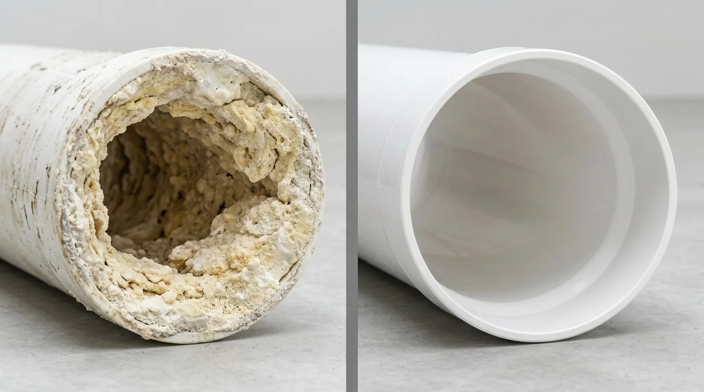

Det var lukten som fick Anders Lindström att reagera. Sötaktig, unken och lite avloppslik – trots att badrummet i den äldre lägenheten på Södermalm i Stockholm såg skinande rent ut. Kaklet blänkte, toaletten var nystädad och en ny WC-tablett satt under kanten.
Anders tog på sig handskar och sågade loss en bit av avloppsröret. På arbetsbänken låg nu ett ungefär 20 centimeter långt rör, täckt på insidan av ett tjockt, svartbrunt lager. Halt och klibbigt, nästan som våt tjära.
”Det här”, säger Anders och håller upp röret mot kameran, ”kommer från en helt vanlig familjetoalett. Fyra personer i en trerummare. Så här kan det se ut i många svenska hem – utan att någon märker det.”
Anders Lindström är erfaren VVS-montör i Stockholm och driver familjeföretaget vidare i tredje generationen. Han har arbetat i branschen i 28 år och hanterat över 15 000 toaletter. ”Det folk uppfattar som rent och det som faktiskt händer inne i avloppsrören är två helt olika saker”, säger han.
Det obehagliga som du inte ser när du städar toaletten
Alla använder toaletten varje dag. De flesta städar den regelbundet med toalettborste, WC-rengöring och kanske en WC-tablett. Sedan tänker man att jobbet är klart.
Men vad händer bakom porslinet, där ingen kan se? Inne i avloppsrören som leder bort vattnet?
Anders förklarar: ”Tänk på beläggningar på tänderna. Bara för att du sköljer munnen försvinner inte allt. Det krävs ordentlig rengöring. På liknande sätt kan avlagringar fastna i rören – men där kommer ingen åt med en vanlig borste.”
Det kallas biofilm: en beläggning av mikroorganismer och organiskt material som kan byggas upp på fuktiga ytor. Med tiden kan även fett, kalk och andra rester fastna. Spolvattnet passerar, men en del beläggningar kan sitta kvar längs rörväggarna.
Och det är just det som är poängen: Att skrubba toalettstolen rengör inte automatiskt insidan av avloppsrören. Porslinet kan glänsa samtidigt som avlagringar finns längre ner.

”Jag brukar säga till kunderna: Ni putsar det ni ser, men glömmer det som finns bakom. Toaletten kan se ren ut medan rören behöver ses över.”
– Anders Lindström, VVS-montör i Stockholm
Fyra steg mot ett stopp i avloppet – de två första märks knappt
Under sina 28 år i yrket har Anders sett samma förlopp många gånger. Ett stopp kommer sällan helt utan förvarning – ofta byggs problemet upp gradvis.


Varför vanliga rengöringsmedel inte alltid löser problemet
Anders har provat det mesta genom åren. Enligt honom räcker vanliga produkter inte alltid för att komma åt beläggningar längre in i rören.

Vanlig WC-rengöring, som WC-Anka och Domestos: Är främst till för att rengöra toalettens porslin. Vätskan rinner vidare genom avloppet och har begränsad kontakttid med rörväggarna.
Kemisk propplösare, till exempel Mr Muscle: Kan lösa upp vissa typer av stopp men måste användas enligt anvisningarna. Felaktig användning kan vara riskabel och vissa rörmaterial kan vara känsliga. Anders berättar att han har sett rör som skadats efter upprepade behandlingar.
Vaskrensare: Kan få loss ett stopp med hjälp av tryck. Däremot är det inte säkert att den tar bort beläggningar som sitter längre in på rörväggarna.
Rensspiral: Kan öppna en passage genom ett stopp så att vattnet rinner igen. Men rester kan fortfarande finnas kvar längs rörets insida.
Akut rörmokare (cirka 1 700–3 400 kr): Kan behöva använda rensspiral eller högtrycksspolning. Kostnaden varierar med ort, tidpunkt och vilket arbete som krävs.
Upptäckten som först gjorde Anders skeptisk – och sedan nyfiken
Våren 2024 träffade Anders en nederländsk branschkollega på Nordbygg-mässan i Stockholm. Kollegan kom från Rotterdam och berättade om ett rengöringspulver som börjat uppmärksammas inom VVS-branschen i Nederländerna. Pulvret hälls i toaletten, bildar skum och är tänkt att komma åt beläggningar inne i rören.
Anders var skeptisk. Efter 28 år i branschen hade han sett gott om produkter som lovade mer än de höll.
Men kollegan visade en film: ett rör med mörka beläggningar på insidan. Pulver tillsattes, följt av vatten, och skummet steg. Efter 30 minuter såg röret betydligt renare ut.
”Jag tittade på filmen tre gånger”, säger Anders. ”Sedan beställde jag hem en förpackning för att testa själv.”
Produkten heter FizzClean.
Varför FizzClean använder skum för att nå insidan av rören
En utmaning med flytande rengöringsmedel är att de rinner nedåt med tyngdkraften. De följer ofta rörets lägsta punkt och kommer inte nödvändigtvis åt hela insidan. Beläggningar kan däremot finnas runt hela röret.
FizzClean bygger i stället på en annan princip: skum.
Pulvret tillsätts i toaletten och aktiveras med varmt vatten enligt produktens anvisningar. Det bildar ett skum som breder ut sig och kan komma i kontakt med en större del av rörets insida än en snabbt förbipasserande vätska.
Så här är den skumbaserade rengöringen tänkt att fungera:
Steg 1: Skummet sprider sig och kommer i kontakt med beläggningar på rörväggarna.
Steg 2: Rengöringsingredienserna får verka mot smuts och organiska rester under den rekommenderade verkningstiden.
Steg 3: Efteråt spolar man enligt anvisningarna för att skölja bort lösgjorda rester.

”Första gången jag testade FizzClean i ett gammalt rör såg jag hur skummet kom åt smuts på insidan. Efter ungefär 30 minuter såg röret ljusare ut. Jag testade en gång till för att jämföra.”
– Anders Lindström
Det många missar: bakterier och beläggningar i avloppet
Det handlar inte bara om stopp. Fuktiga avloppsmiljöer kan också innehålla mikroorganismer, och en ren toalettstol betyder inte att alla ytor i avloppssystemet är fria från beläggningar.
Forskare vid University of Colorado har studerat hur små droppar kan spridas i luften när en toalett spolas. I experiment har en sådan ”toalettplym” visualiserats, med partiklar som kan nå upp till omkring 1,8 meter. Det visar varför god toaletthygien och vanliga städrutiner är viktiga.
Små droppar kan spridas till ytor i badrummet. Därför är det klokt att hålla rent, förvara tandborstar skyddat och stänga toalettlocket när det går.
Att hålla avloppet rent kan vara en del av underhållet. FizzClean är avsett för rengöring, men ersätter inte vanliga hygienrutiner eller professionell hjälp vid allvarliga stopp.
Det här berättar användare efter att ha provat produkten
”Hos oss hade toaletten spolat undan allt långsammare i nästan ett halvår. Det där kluckandet på nätterna gjorde mig tokig. Rörmokaren hade lämnat en offert på 2 700 kr för en ordentlig rensning. Jag provade FizzClean som ett sista försök. Hällde i pulvret, väntade medan det skummade och spolade efter 30 minuter. Det rann mycket bättre. För mig var det verkligen värt att testa.”
”Jag är 74 år och bor själv. Tidigare fick jag ringa rörmokaren ungefär två gånger om året, och varje besök kostade runt 2 000 kr. Mitt barnbarn gav mig FizzClean i julklapp. Jag var tveksam först, men testade. Nu har det gått åtta månader och jag har inte behövt boka något nytt besök. Barnbarnet ska få extra mycket julmat i år!”
”Jag hade provat allt: propplösare, vaskrensare och till och med en rensspiral från byggvaruhuset. Inget hjälpte särskilt länge. Jag var skeptisk till FizzClean också, men skummet var lätt att använda och avloppet blev bättre. Fyra månader senare fungerar det fortfarande fint hemma hos oss.”
”Vi har en tvåårig dotter som vill undersöka precis allt i badrummet. Jag har blivit mycket mer noga med städningen. Nu använder jag FizzClean regelbundet enligt anvisningarna och fortsätter förstås med våra vanliga hygienrutiner. Smidigt att ha hemma.”
”Det var lördag kväll vid tiotiden när toaletten plötsligt slutade fungera. En akut rörmokare kostade oss 3 200 kr för ett kort besök. På måndagen beställde min son FizzClean och föreslog att jag skulle använda det som underhåll enligt instruktionerna. Sedan dess har vi inte haft något nytt stopp.”

FizzClean kan användas på flera ställen där avlopp riskerar att sättas igen
Det som började som en produkt för toaletten kan, beroende på tillverkarens anvisningar, även användas där avlopp samlar på sig smuts och beläggningar:
Toalett: Beläggningar, lukt och avlagringar i avloppet.
Handfat: Hår, tvålrester och tandkrämsrester.
Dusch och badkar: Hår, schamporester och kalkavlagringar.
Diskho: Fett och matrester i avloppet.
Tvättmaskin: Ludd och tvättmedelsrester i avloppsanslutningen – kontrollera först att användningen stöds av tillverkaren.
En rengöringsprodukt för flera av hemmets avlopp, förutsatt att den är lämplig för respektive användningsområde.
Var hittar man originalet? (Se upp för kopior)
FizzClean marknadsförs via tillverkarens officiella webbshop. Kontrollera alltid säljarens uppgifter och aktuella villkor innan du beställer.
Anders rekommenderar att man är försiktig med okända återförsäljare: ”Läs innehållsförteckningen och kontrollera att du verkligen får rätt produkt. Två förpackningar som ser lika ut behöver inte innehålla samma sak.”
Genom direktförsäljning kan tillverkaren erbjuda egna kampanjpriser. Aktuella priser, leveransvillkor, ångerrätt och eventuella garantier framgår av den officiella webbshoppen.
JUST NU: Upp till 70 % rabatt – så länge erbjudandet gäller
Tillverkaren annonserar för närvarande en kampanj med upp till 70 % rabatt på FizzClean. Kontrollera aktuellt pris och lagersaldo på den officiella webbplatsen.
Se om FizzClean kan beställas till din adress i Sverige: